M01_SimpleMountains
M01_SimpleMountains
Code: M01_SimpleMountains.kt
Overview
M01_SimpleMountains started off as an idea to create generative mountain landscapes and evolved into a bit of an experiment in 3d rendering, and animation. This project was done in OpenRNDR and Kotlin and I feel like I am starting to see some of the limitations of OpenRNDR in terms not of it’s capabilities, but instead in terms of it’s documentation and community.
Algorithm
This algorithm relieas on the concept of a bunch of “attractors”, which in this case actually ended up just being sets of some curve centered around a point with some magnitude and clipped between 0 to the max_magnitude. This allows for the concepts of peak attractors and valley attractors. Peaks can ONLY contribute upward movement and valleys can only contribute downward movement. The basic shape of these curves is determined by the following equation:
f(x) = clip(1.0 - K*(abs(center - x)/width)^N, 0, 1) * MAGNITUDEThis allows for us to feed random numbers into N to change the shape of the curve, and K to change the gain. All numbers are scaled here from 0 to 1 internally and then scaled back at the end.
So the algorithm looks like:
- drop
Ppeaks andVvalleys and assign each a random SHAPE (N) and gain (K) - Sum all of the resulting curves and rescale as needed
- Choose a random mean value
- Create a contour and shape of this value.
As the program started the contours were plotted as particles going across the screen effected by the first derivative of the summed mountain curve. As the program went out I formed an entire shape and then started adding more of them. First I would translate them down the page as a function of their index to make it look like there was a fly by like effect. Eventually I added 3d volumes and 2 methods of drawing:
- A mesh of the shape
- A mesh of a bunch of rectangles drawing equal sections of the shape
This ended up being a fun study in 3d rendering, with one major learning: combine as many things into one mesh as possible to save memory.
Notes
These are some early notes
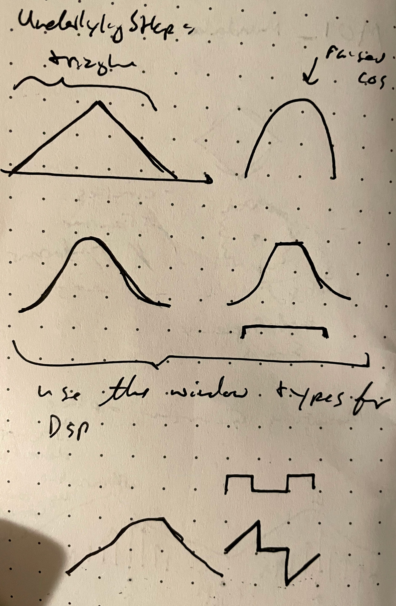
Progression
Getting the basic Peak and Valley attractors setup
| Raw Peaks and Valleys | Shapes |
| —————————————————–– | —————————————————–– | | | 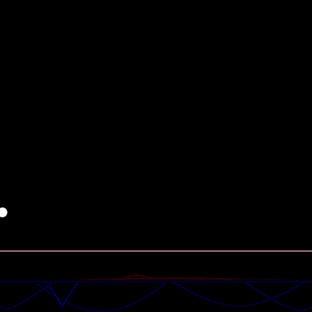 |
Tracing Curves
| 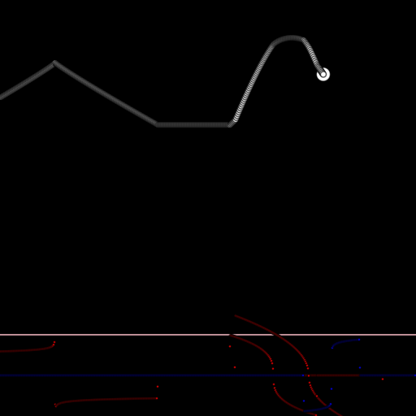 | 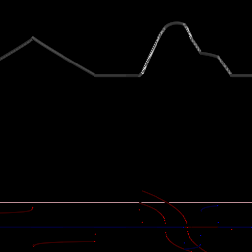 |
|---|---|
| 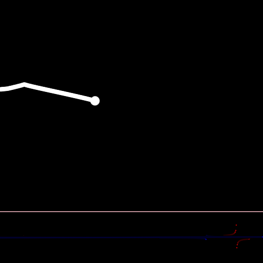 | |
| 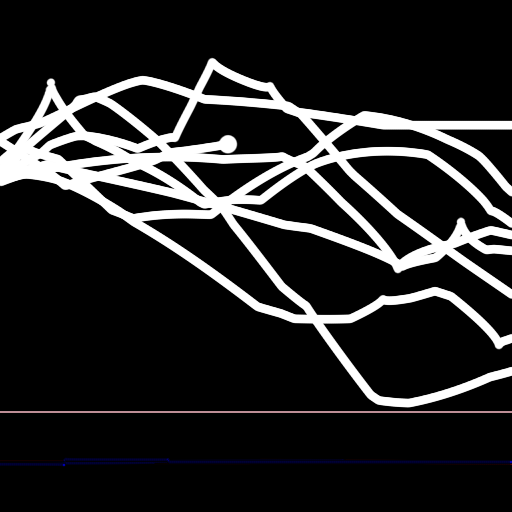 | !static/sketches/M01_SimpleMountains/sketch.M01_SimpleMountains-2021-07-26-00.16.13 1.png |
Drawing Contours and Filling Shapes
| 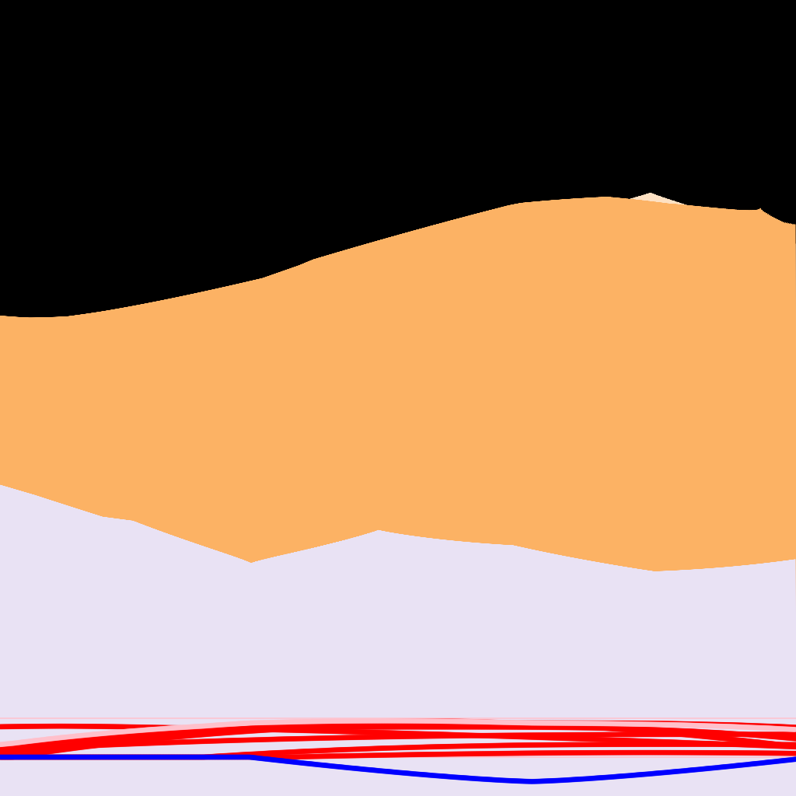 |
Rectangles and Adding Outline
| 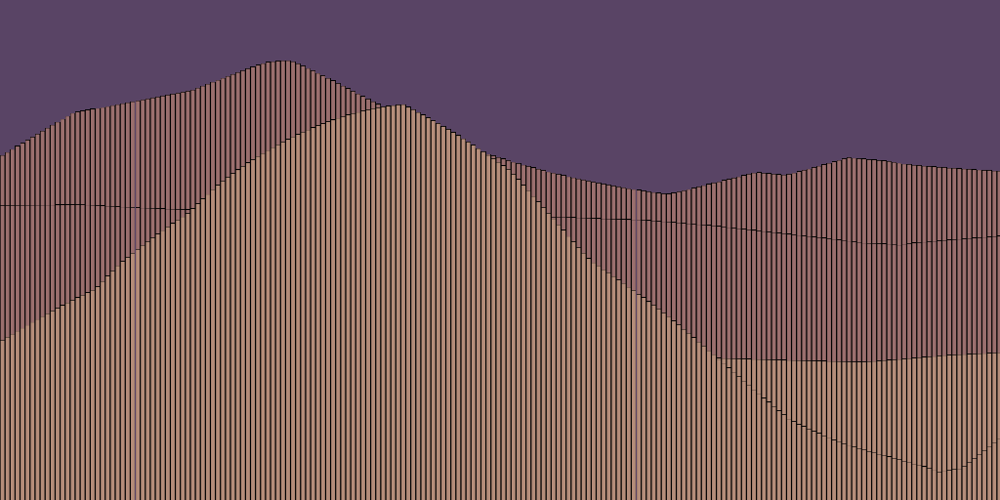 | |
|---|---|
 |  |
Video Flybys
3D Mountain World
| 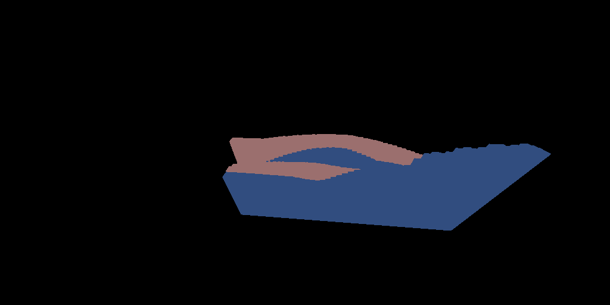 | |
|---|---|
| 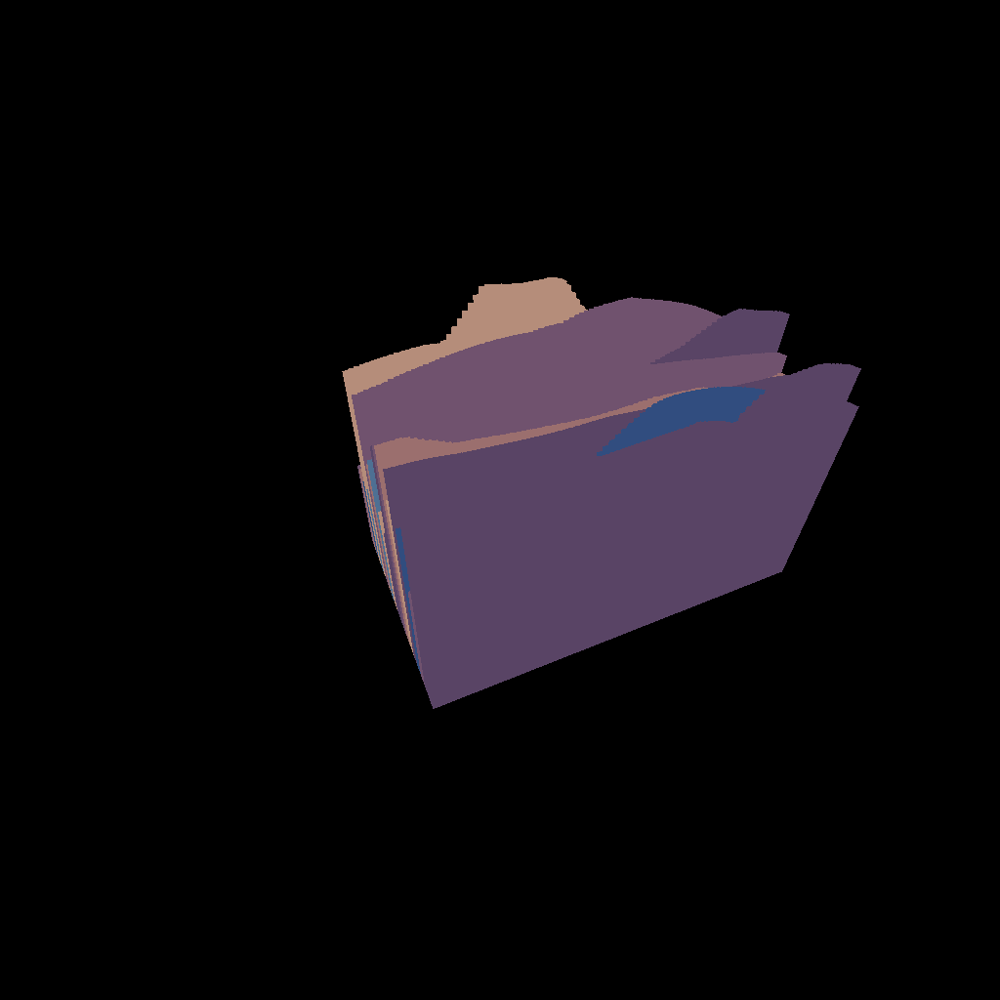 | |
Getting a nice repeatable view
| 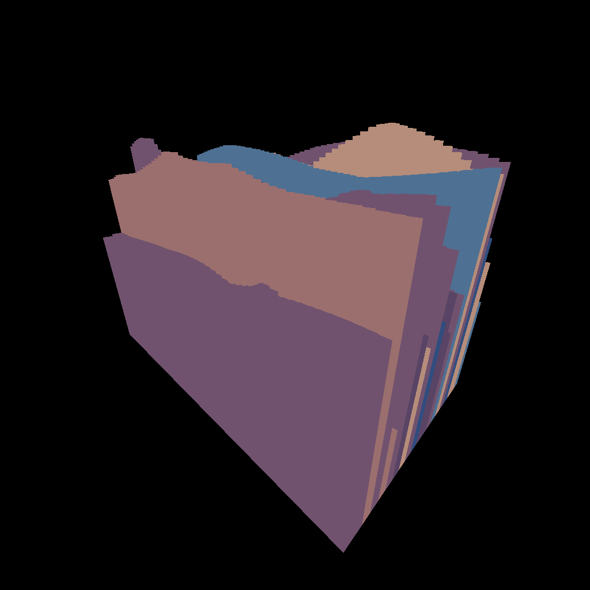 | 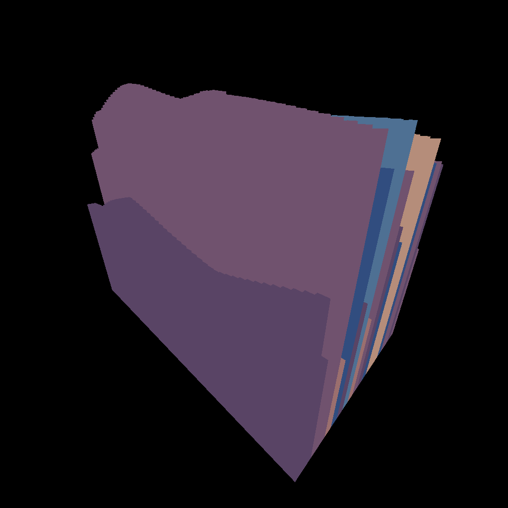 |
|---|---|
| 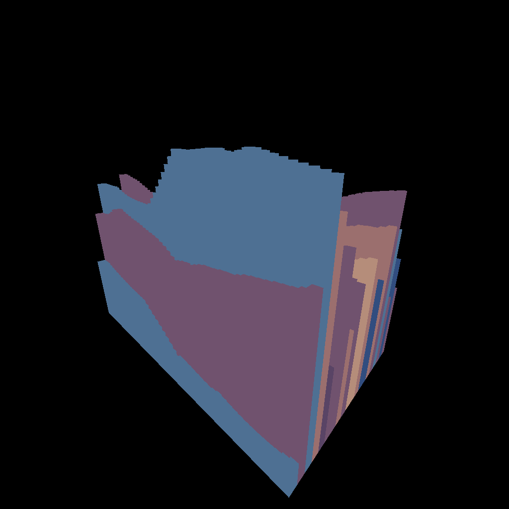 | |
| 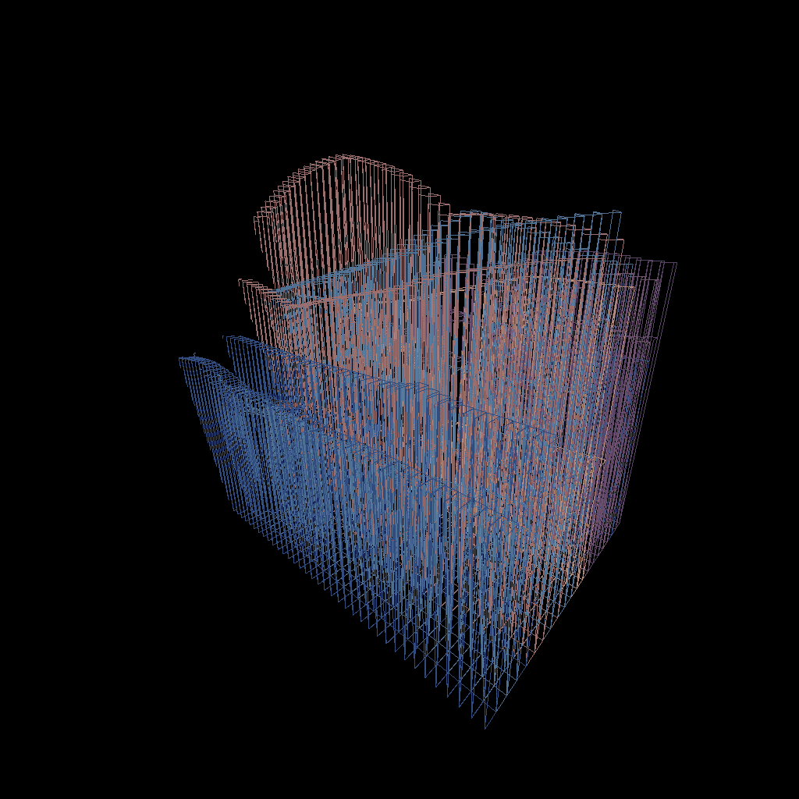 | 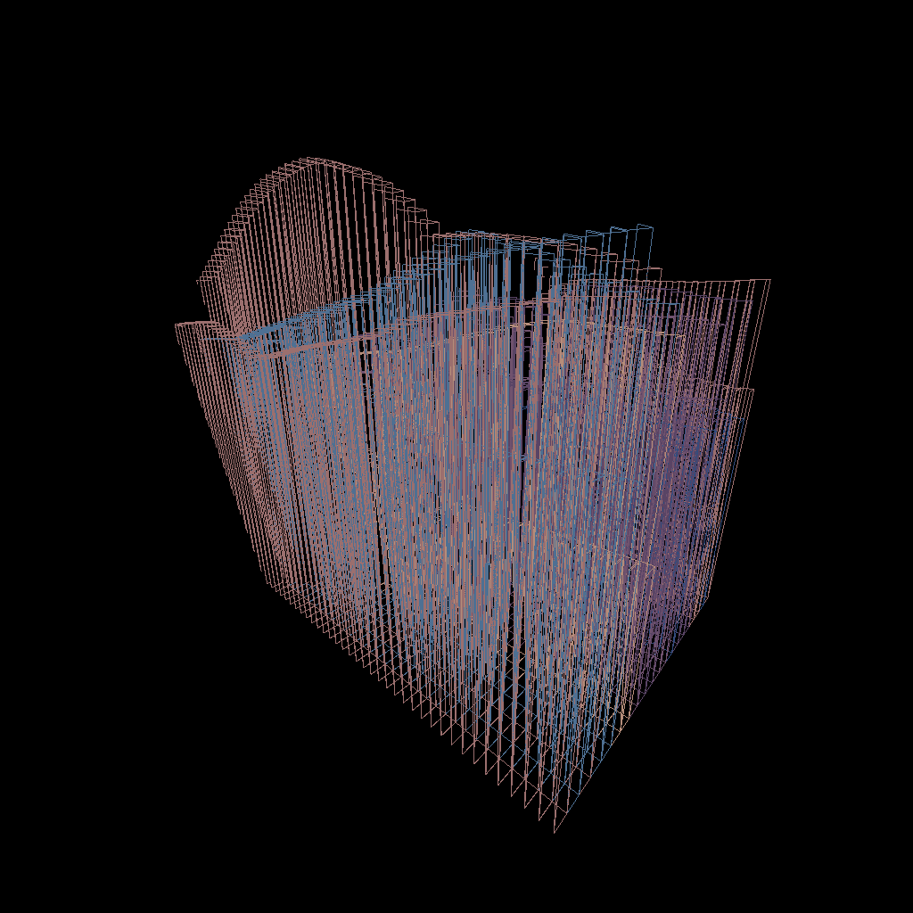 |
Future Work
- I need to know more about Color Theory and have better Probabilistic Color Palettes
- Do this in 3d! This could be really neat, the same concept should scale
- Experiment with adding more mountain shapes and smoothing them with a low pass filter.
- Figure out how to prevent this program from crashing… There is a memory leak somewhere
- Generative Terrain Creation
- Experiment with Camera Positions and Motion
- techniques/Flow Fields in each section possibly using techniques/Voronoi Cells to subdivide the image up
- City scapes
- Temporal relationship to previous
Things Learnt
- OpenRNDR#Live programming
- OpenRNDR#ScreenRecorder Video
- Played with subcontours, and other such things.
- Created code for sampling a contour at equal distance spacings and turning it into rectangles (
#refactor) - Created code for creating some reasonable mountains actually
- 3d cameras https://openrndr.discourse.group/t/how-to-use-orbitalcamera-and-orbitalcontrols-in-only-some-parts-of-your-program/53
- Meshes and drawing in 3d
Woah, this was a learning experience for sure… I spent way too much time on this one getting it to something I was happy with, but it got there.

{kind=link}